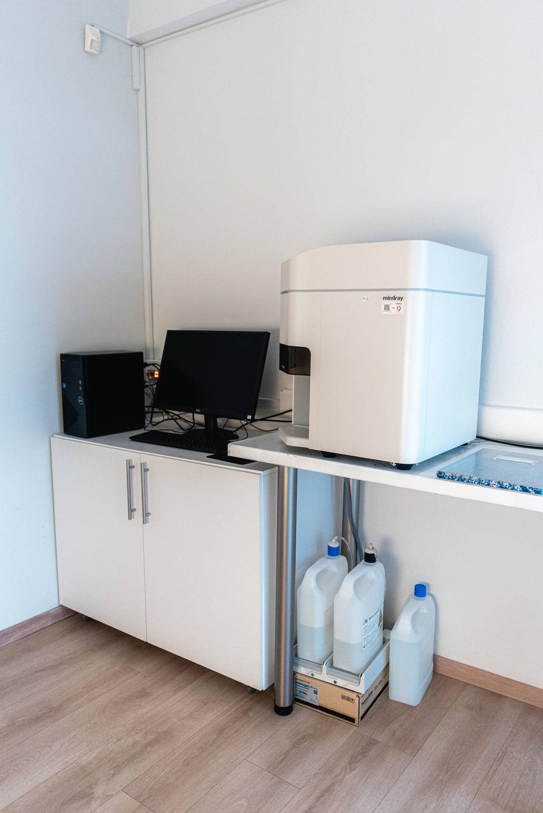

Νομικά
Πολιτική
Απορρήτου.
Πώς συλλέγουμε, χρησιμοποιούμε και προστατεύουμε τα προσωπικά σας δεδομένα, σύμφωνα με τον Γενικό Κανονισμό Προστασίας Δεδομένων (ΕΕ) 2016/679.
Υπεύθυνος επεξεργασίας
Εργαστήριο BIOLAB — Μοριακή Διαγνωστική Ο.Ε., Τσαλοπούλου 15, 62122 Σέρρες. Τηλέφωνο: 23211 21602 · Email: info@biolabs.gr.
Ποια δεδομένα συλλέγουμε
- Στοιχεία ταυτοποίησης και επικοινωνίας — ονοματεπώνυμο, τηλέφωνο, email, διεύθυνση, ΑΜΚΑ όπου απαιτείται.
- Δεδομένα υγείας — ιατρικό ιστορικό, παραπεμπτικά, δείγματα και αποτελέσματα εξετάσεων. Πρόκειται για ειδική κατηγορία δεδομένων, με ενισχυμένη προστασία.
- Γενετικά δεδομένα — όπου εκτελείται γενετικός έλεγχος, με ρητή, χωριστή και έγγραφη συναίνεσή σας.
- Δεδομένα χρήσης του ιστοτόπου — τεχνικά δεδομένα περιήγησης, εφόσον τα παρέχετε μέσω της φόρμας επικοινωνίας.
Σκοπός και νομική βάση
- Παροχή διαγνωστικών υπηρεσιών — άρθρο 9 παρ. 2 στοιχ. η΄ ΓΚΠΔ (σκοποί υγείας).
- Εκπλήρωση νομικών υποχρεώσεων — φορολογική και υγειονομική νομοθεσία.
- Απάντηση σε αιτήματα επικοινωνίας — έννομο συμφέρον ή συναίνεση.
- Γενετικές εξετάσεις — ρητή συναίνεση, η οποία λαμβάνεται πάντοτε εγγράφως.
Αποδέκτες
Τα αποτελέσματα παραδίδονται αποκλειστικά στον ίδιο τον εξεταζόμενο ή σε πρόσωπο που αυτός έχει εξουσιοδοτήσει εγγράφως, καθώς και στον θεράποντα ιατρό εφόσον υπάρχει σχετική εντολή. Ενδέχεται να συνεργαζόμαστε με πιστοποιημένα συνεργαζόμενα εργαστήρια για εξειδικευμένες αναλύσεις, υπό αυστηρές συμβατικές δεσμεύσεις εμπιστευτικότητας. Δεν πωλούμε και δεν παραχωρούμε δεδομένα σε τρίτους για εμπορικούς σκοπούς.
Χρόνος τήρησης
Τα δεδομένα υγείας τηρούνται για το χρονικό διάστημα που ορίζει η κείμενη νομοθεσία για τα ιατρικά αρχεία. Τα δεδομένα επικοινωνίας που υποβάλλονται μέσω της φόρμας διατηρούνται μόνο για όσο απαιτείται η διεκπεραίωση του αιτήματός σας.
Τα δικαιώματά σας
- Πρόσβαση στα δεδομένα σας και λήψη αντιγράφου
- Διόρθωση ανακριβών στοιχείων
- Διαγραφή, εφόσον δεν αντιβαίνει σε νόμιμη υποχρέωση τήρησης
- Περιορισμός ή εναντίωση στην επεξεργασία
- Φορητότητα των δεδομένων σας
- Ανάκληση της συναίνεσής σας οποτεδήποτε, χωρίς αναδρομική ισχύ
Για την άσκηση των δικαιωμάτων σας επικοινωνήστε στο info@biolabs.gr. Έχετε επίσης δικαίωμα καταγγελίας στην Αρχή Προστασίας Δεδομένων Προσωπικού Χαρακτήρα (www.dpa.gr).
Ασφάλεια
Εφαρμόζουμε τεχνικά και οργανωτικά μέτρα για την προστασία των δεδομένων: ελεγχόμενη φυσική πρόσβαση στους χώρους του εργαστηρίου, κωδικοποίηση δειγμάτων, περιορισμένα δικαιώματα πρόσβασης στα πληροφοριακά συστήματα και δέσμευση εμπιστευτικότητας του συνόλου του προσωπικού.
Cookies
Ο παρών ιστότοπος δεν χρησιμοποιεί cookies παρακολούθησης ή διαφημιστικά cookies. Χρησιμοποιούνται μόνο γραμματοσειρές τρίτου παρόχου (Google Fonts) και ενσωματωμένος χάρτης (Google Maps) στη σελίδα επικοινωνίας, οι οποίοι ενδέχεται να λαμβάνουν τη διεύθυνση IP σας.